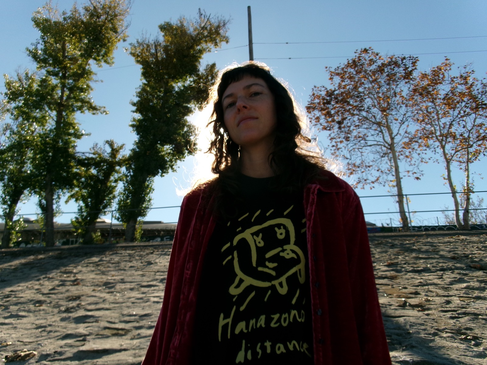

Linnea Sablosky
Musician · Los Angeles
New release
Lean
Linnea Sablosky’s debut album, Lean, puts a wild imagination on vivid display. With co-production from Michael Sachs, the record is an indelible union of collective strengths: gorgeous woodwinds and eccentric instrumentation, choral arrangements that swell and split, crooked rhythms, and pop songs as ornate collages. Each track perfectly balances innovation and simplicity while Sablosky’s sweetly unaffected voice gleams throughout, crafty and shimmering. Weird powers grow strange flowers, and with Lean, Sablosky’s artistry is in full bloom.
Upcoming
Shows
- with Ruckus Ensemble Tickets / info
- Yosemite Choir concert — location TBD
- with Bonnie ‘Prince’ Billy Tour dates

About
Bio
Linnea Sablosky has toured internationally singing Meara O’Reilly’s “Hockets for Two Voices,” and with world folk choir Northern Harmony. They’ve released records with Kidi Band, Stone Fruit Trio, and Wheeler, Sablosky & Pearson, opened for artists such as Bonnie “Prince” Billy and Buck Meek, and sung on records such as KNOWER’s KNOWER FOREVER. Sablosky lives in Los Angeles teaching ear training, singing and music theory, directing Yosemite Choir, and practicing acrobatics in their spare time.
Book
Hire me
Available for:
- Choral arranging
- Harmony singing / background vocals
- Songwriting
- Gigs / touring (solo project)
- Teaching — singing, music theory, harmonizing, ear training
- Workshops — Georgian music, yodeling, and Sacred Harp singing
Community
Yosemite Choir
Join Yosemite Choir for Spring Season! 50+ people singing Georgian music and “Hammond Song.”
Stay in touch
Newsletter & contact
Email me to get on the newsletter list.